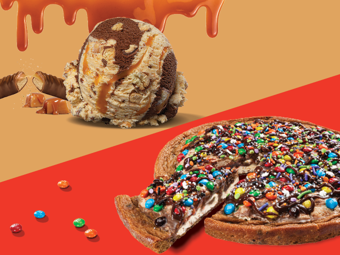
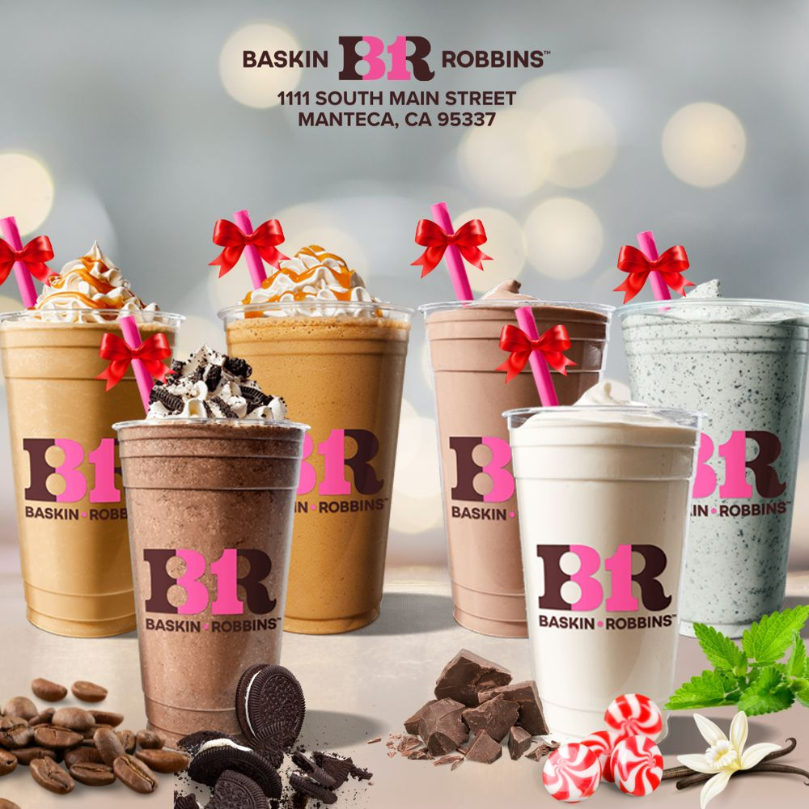

Latest From Blog

Introducing Wickedly Tempting New Treats:
TWIX® Caramel Crunch and the Spooktacular Polar Pizza®
Don’t let your sweet tooth down this spooky season—get ready to indulge in the ultimate Halloween treats! If you’re looking for some hauntingly delicious desserts, Baskin-Robbins® is introducing our new Flavor of the Month, TWIX® Caramel Crunch, and the scary-good Spooktacular Polar Pizza® Ice Cream Treat.
Read More

The Story Behind the Cappuccino Blast®
At Baskin-Robbins® we blend the best of both worlds – coffee and ice cream.
Frozen coffee never tasted so sweet. Each Cappuccino Blast® is made with Arabica coffee beans with any flavor ice cream, blended with ice and topped with whipped cream.
And the only thing sweeter than this fan-favorite? The memories you’ll make all day every day with this treat.
Our Cappuccino Blast® is also special for more than just its ice creamy goodness.
Baskin-Robbins was one of the first U.S. brands to introduce a blended frozen coffee beverage with our Cappuccino Blast® in 1994, and it quickly became a guest favorite.
That’s about three decades of creating smiles with every sip!
Read More